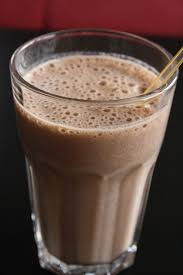

Welcome to Duy Le's page
My facebook Page: Facebook
Learn more on Wikipedia.
Chocolate milk is delicious. It's a bad habit, but I drink at least one cup of it a day. Store bought mixes are okay, but I like a stronger chocolate flavor, so I like to make my own.
Ingredients
- 2oz hot water (doesn't have to be boiling, but more than warm. You want to melt the chocolate.)
- 18oz white milk
- Whole milk is amazing with this but very unhealthy. I usually drink two percent, but you do you.
- 2 tbsp Dutch process chocolate powder
Dutch process chocolate
Chocolate that's been treated with an alkalizing agent. It has lowe acidity and a moother flavor than normal cocoa powder
Learn more on Wikipedia.
- 3 tbsp granulated sugar
- A pinch of kosher salt
Instructions
- Put the chocolate poweder in the cup.
- Add hot water to cup.
- Mix water and chocolate until they are well combined. There should not be any lumps.
- Add the milk to the cup.
- While stirring, slowly add the sugar to the cup. You don't want to dump it all in at once.
- Add pinch of salt and give a small stir. Start with a small amount of saltm taste the mixture and add more to your preferences.
